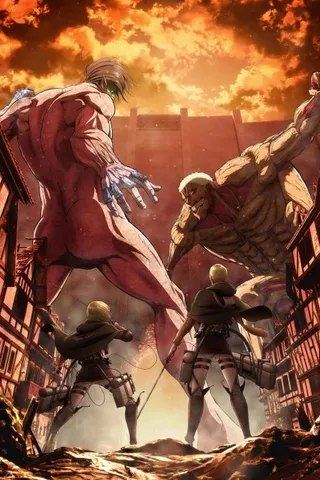
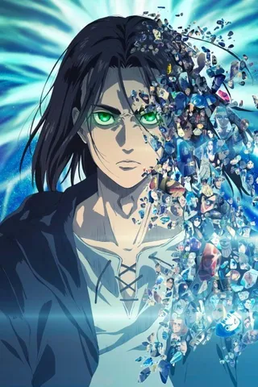
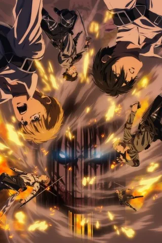

ANow: the seasons in a row
Attack on Titan2 of 6 in your library

SequelSeason 22017

SequelSeason 32018

SequelSeason 3 Part 22019

SequelThe Final Season2021

SequelFinal Season Part 22022

SequelThe Final Chapters2023
BThe map: one line through the franchise
Attack on Titan3 of 7 in your library
 Season 12013Season 22017Season 32018
Season 12013Season 22017Season 32018Season 3 Part 22019
The Final Season2021Final Season Part 22022
The Final Chapters2023
CThe beam: the franchise by year, light waking what's missing
Attack on Titan3 of 7 in your library
Season 1Season 2Season 3Season 3 Part 2
The Final SeasonFinal Season Part 2
The Final Chapters
DThe shelf: holes where the sequels go
Attack on Titan3 of 7 in your library
SequelSeason 3 Part 22019
SequelThe Final Season2021
SequelFinal Season Part 22022
SequelThe Final Chapters2023
EThe show page: Related, the way the app shows it
Attack on Titan
Related
Sequel TVSeason 2Sequel TVSeason 3Sequel TVSeason 3 Part 2
Sequel TVThe Final SeasonSequel TVFinal Season Part 2
Sequel SpecialThe Final Chapters